# loading packages
library(readr)
library(dplyr)
library(tidyr)
library(forcats) # makes working with factors easier
library(ggplot2)
library(leaflet) # interactive maps
library(DT) # interactive tables
library(scales) # scale functions for visualization
library(janitor) # expedite cleaning and exploring data
library(viridis) # colorblind friendly color paletteData Visualization
a05 assignment
Introduction
In this assignment, I work with a socio-ecological monitoring dataset from Delta restoration sites and transformed it into a tidy format ready for visualization. The goal of this exercise is to apply our strengthened data cleaning skills to reshape summarize, and plot our dataset while generating interactive maps that display how visitation varies across the restoration sites.
Import the Data
# reading in data
delta_visits_raw <- read_csv(here::here("data/raw", "Socioecological_monitoring_data.csv"))Explore the Data
# checking column names
colnames(delta_visits_raw) [1] "EcoRestore_approximate_location" "Reach"
[3] "Latitude" "Longitude"
[5] "Date" "Time_of_Day"
[7] "sm_boat" "med_boat"
[9] "lrg_boat" "bank_angler"
[11] "scientist" "cars"
[13] "notes" # peaking at each column and class
glimpse(delta_visits_raw)Rows: 55
Columns: 13
$ EcoRestore_approximate_location <chr> "Decker Island", "Decker Island", "Dec…
$ Reach <chr> "Brannan to Decker Island", "Decker Is…
$ Latitude <dbl> 38.10587, 38.10587, 38.08456, 38.08456…
$ Longitude <dbl> -121.7064, -121.7064, -121.7204, -121.…
$ Date <date> 2017-07-07, 2017-07-07, 2017-07-07, 2…
$ Time_of_Day <chr> "unknown", "unknown", "unknown", "unkn…
$ sm_boat <dbl> 0, 0, 0, 0, 2, 0, 0, 7, 1, 0, 0, 0, 0,…
$ med_boat <dbl> 2, 4, 0, 1, 10, 0, 0, 1, 2, 0, 1, 6, 1…
$ lrg_boat <dbl> 0, 0, 0, 0, 1, 0, 0, 0, 0, 0, 0, 0, 0,…
$ bank_angler <dbl> 1, 3, 0, 0, 0, 0, 0, 0, 2, 0, 0, 5, 0,…
$ scientist <dbl> 0, 0, 0, 0, 0, 0, 0, 0, 0, 0, 0, 0, 0,…
$ cars <dbl> 0, 0, 0, 0, 0, 0, 0, 0, 0, 0, 0, 0, 0,…
$ notes <chr> "no notes", "no notes", "Nobody or tra…# displaying from when to when
range(delta_visits_raw$Date)[1] "2017-07-07" "2018-03-13"# pulling out unique variable such as time of day
unique(delta_visits_raw$Time_of_Day)[1] "unknown" "morning"Clean the Data
# transforming all column names into the same format
delta_visits <- delta_visits_raw %>%
janitor::clean_names()
colnames(delta_visits) [1] "eco_restore_approximate_location" "reach"
[3] "latitude" "longitude"
[5] "date" "time_of_day"
[7] "sm_boat" "med_boat"
[9] "lrg_boat" "bank_angler"
[11] "scientist" "cars"
[13] "notes" # reshaping data into a long format
visits_long <- delta_visits %>%
pivot_longer(cols = c(sm_boat, med_boat, lrg_boat, bank_angler, scientist, cars),
names_to = "visitor_type",
values_to = "quantity") %>%
rename(restore_loc = eco_restore_approximate_location) %>%
select(-notes)
## Checking the outcome
head(visits_long)# A tibble: 6 × 8
restore_loc reach latitude longitude date time_of_day visitor_type
<chr> <chr> <dbl> <dbl> <date> <chr> <chr>
1 Decker Island Brannan … 38.1 -122. 2017-07-07 unknown sm_boat
2 Decker Island Brannan … 38.1 -122. 2017-07-07 unknown med_boat
3 Decker Island Brannan … 38.1 -122. 2017-07-07 unknown lrg_boat
4 Decker Island Brannan … 38.1 -122. 2017-07-07 unknown bank_angler
5 Decker Island Brannan … 38.1 -122. 2017-07-07 unknown scientist
6 Decker Island Brannan … 38.1 -122. 2017-07-07 unknown cars
# ℹ 1 more variable: quantity <dbl>Exercise 1
# calculating daily visits by "restore_loc", "date", and "visitor_type"
daily_visits_loc <- visits_long %>%
group_by(restore_loc, date, visitor_type) %>%
summarise(daily_visits = sum(quantity))
head(daily_visits_loc)# A tibble: 6 × 4
# Groups: restore_loc, date [1]
restore_loc date visitor_type daily_visits
<chr> <date> <chr> <dbl>
1 Decker Island 2017-07-07 bank_angler 4
2 Decker Island 2017-07-07 cars 0
3 Decker Island 2017-07-07 lrg_boat 0
4 Decker Island 2017-07-07 med_boat 6
5 Decker Island 2017-07-07 scientist 0
6 Decker Island 2017-07-07 sm_boat 0Plot the Data
# Option 1 - data and mapping called in the ggplot() function
ggplot(data = daily_visits_loc,
aes(x = restore_loc, y = daily_visits)) +
geom_col()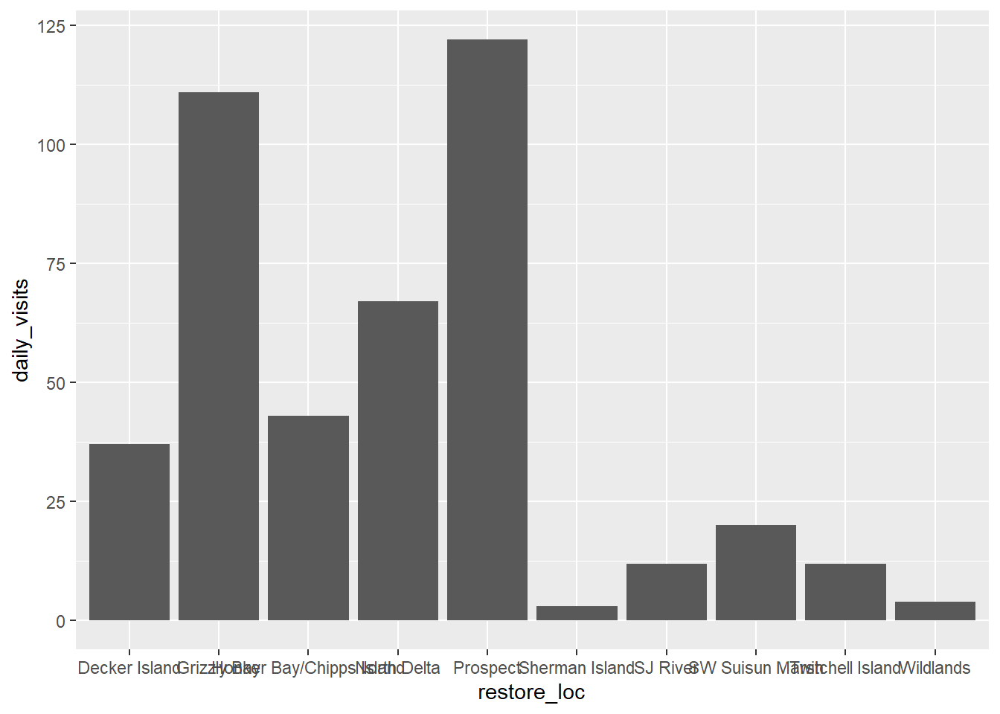
# Option 2 - data called in ggplot function; mapping called in geom
ggplot(data = daily_visits_loc) +
geom_col(aes(x = restore_loc, y = daily_visits))
# Option 3 - data and mapping called in geom
ggplot() +
geom_col(data = daily_visits_loc,
aes(x = restore_loc, y = daily_visits))
Customize the Plot
# plotting same bar graph from above but in color
ggplot(data = daily_visits_loc,
aes(x = restore_loc, y = daily_visits,
fill = "green")) +
geom_col()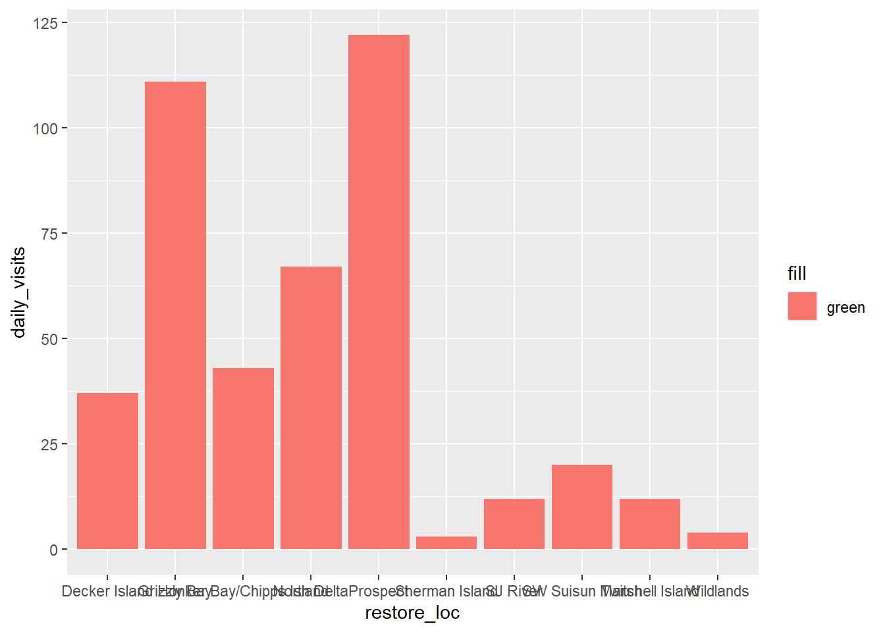
# correcting input of color to be outside of map aesthetics
ggplot(data = daily_visits_loc,
aes(x = restore_loc, y = daily_visits)) +
geom_col(fill = "green")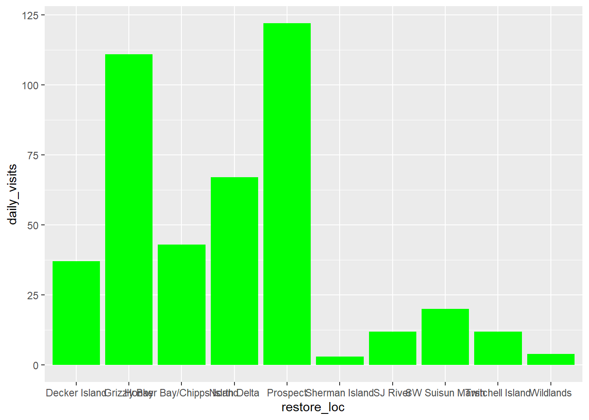
# mapping color of the bar to a variable
ggplot(data = daily_visits_loc,
aes(x = restore_loc, y = daily_visits,
fill = visitor_type)) +
geom_col()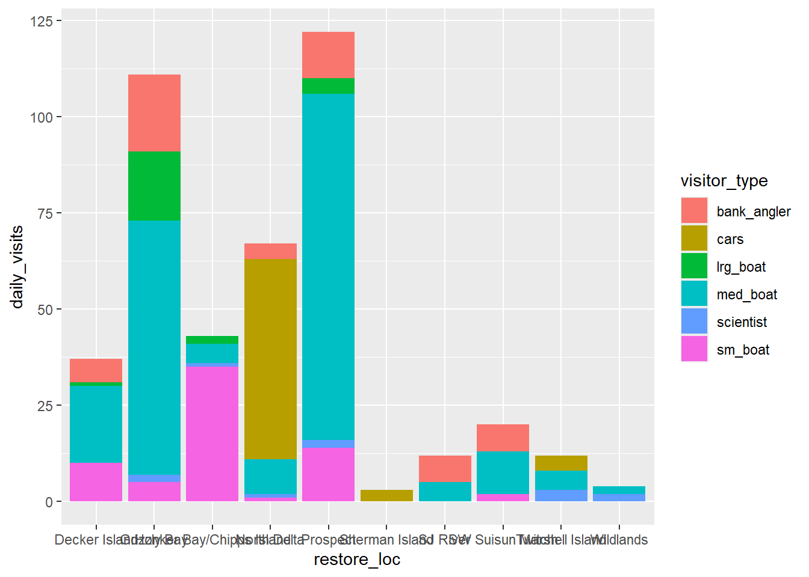
Set ggplot Themes
# making minor adjustments: adding labels, flipping axis orientation, and inputting built in theme
ggplot(data = daily_visits_loc,
aes(y = restore_loc, x = daily_visits, fill = visitor_type)) +
geom_col() +
labs(x = "Number of Visits",
y = "Restoration Location",
fill = "Type of Visitor",
title = "Total Number of Visits to Delta Restoration Areas by visitor type",
subtitle = "Sum of all visits during July 2017 and March 2018") +
theme_bw()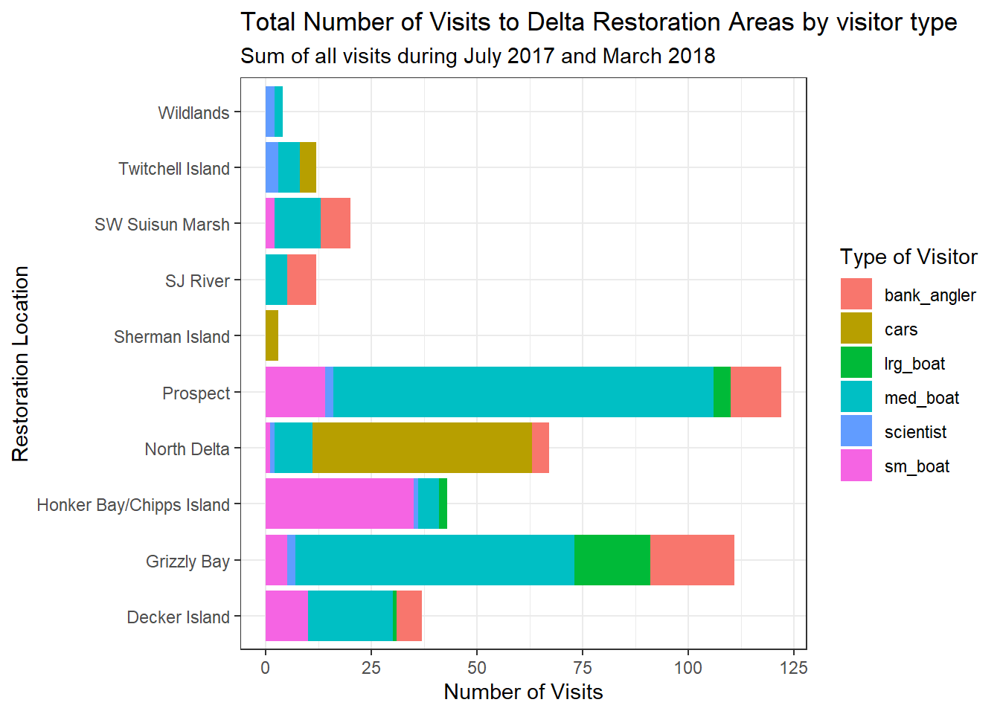
# using theme() call to change position of legend
ggplot(data = daily_visits_loc,
aes(y = restore_loc, x = daily_visits, fill = visitor_type)) +
geom_col() +
labs(x = "Number of Visits",
y = "Restoration Location",
fill = "Type of Visitor",
title = "Total Number of Visits to Delta Restoration Areas by visitor type",
subtitle = "Sum of all visits during study period") +
theme_bw() +
theme(legend.position = "bottom",
axis.ticks.y = element_blank()) 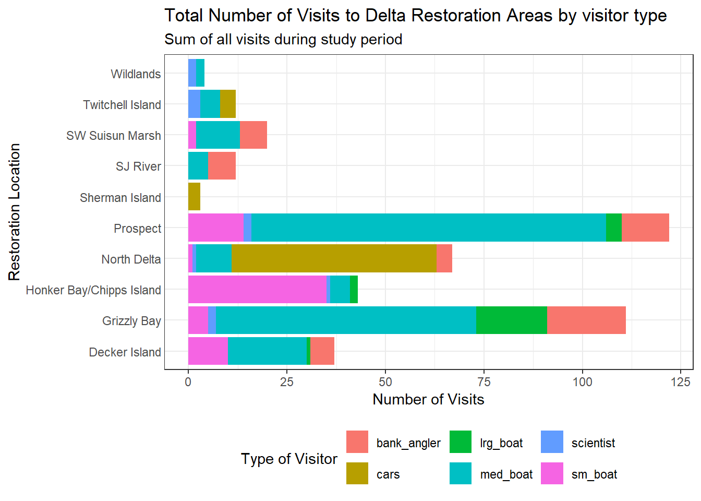
# saving theme() series to use on multiple plots
my_theme <- theme_bw(base_size = 16) +
theme(legend.position = "bottom",
axis.ticks.y = element_blank())# current version of our plot
ggplot(data = daily_visits_loc,
aes(y = restore_loc, x = daily_visits, fill = visitor_type)) +
geom_col() +
labs(x = "Number of Visits",
y = "Restoration Location",
fill = "Type of Visitor",
title = "Total Number of Visits to Delta Restoration Areas by visitor type",
subtitle = "Sum of all visits during study period") +
my_theme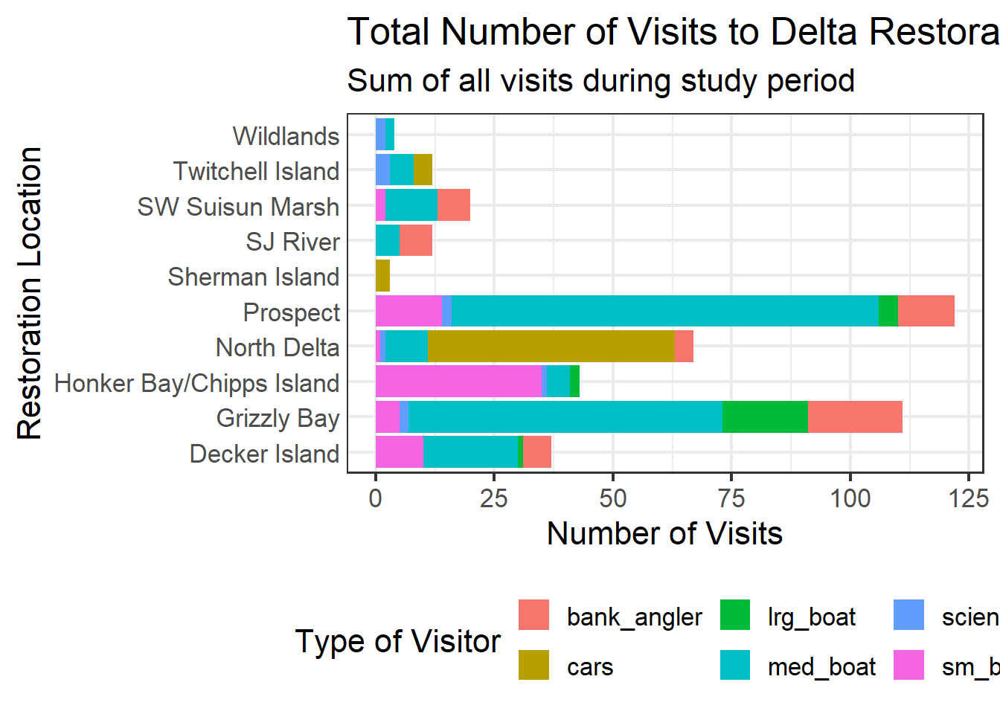
Exercise 2
# expanding the bars to remove the gap between the bars and border
ggplot(data = daily_visits_loc,
aes(y = restore_loc, x = daily_visits, fill = visitor_type)) +
geom_col() +
labs(x = "Number of Visits",
y = "Restoration Location",
fill = "Type of Visitor",
title = "Total Number of Visits to Delta Restoration Areas by visitor type",
subtitle = "Sum of all visits during study period") +
scale_x_continuous(breaks = seq(0,120, 20), expand = c(0,0)) +
my_theme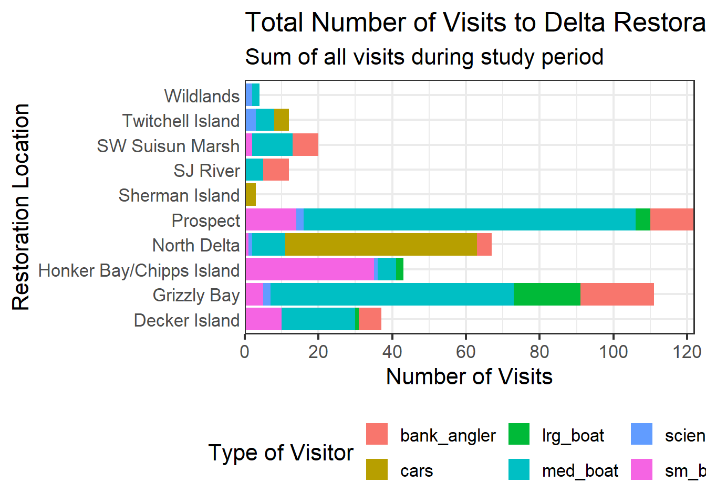
Reorder Categorical Variables
# reordering restore_loc based on total number of visits
daily_visits_totals <- daily_visits_loc %>%
group_by(restore_loc) %>%
mutate(n = sum(daily_visits)) %>%
ungroup() %>%
mutate(restore_loc = fct_reorder(restore_loc, n))
head(daily_visits_totals)# A tibble: 6 × 5
restore_loc date visitor_type daily_visits n
<fct> <date> <chr> <dbl> <dbl>
1 Decker Island 2017-07-07 bank_angler 4 37
2 Decker Island 2017-07-07 cars 0 37
3 Decker Island 2017-07-07 lrg_boat 0 37
4 Decker Island 2017-07-07 med_boat 6 37
5 Decker Island 2017-07-07 scientist 0 37
6 Decker Island 2017-07-07 sm_boat 0 37# reordering alphabetical order
levels(daily_visits_totals$restore_loc) [1] "Sherman Island" "Wildlands"
[3] "SJ River" "Twitchell Island"
[5] "SW Suisun Marsh" "Decker Island"
[7] "Honker Bay/Chipps Island" "North Delta"
[9] "Grizzly Bay" "Prospect" # adding fct_reorder()
ggplot(data = daily_visits_totals,
aes(x = daily_visits, y = restore_loc,
fill = visitor_type)) +
geom_col() +
labs(x = "Number of Visits",
y = "Restoration Location",
fill = "Type of Visitor",
title = "Total Number of Visits to Delta Restoration Areas by visitor type",
subtitle = "Sum of all visits during study period") +
scale_x_continuous(breaks = seq(0,120, 20), expand = c(0,0)) +
my_theme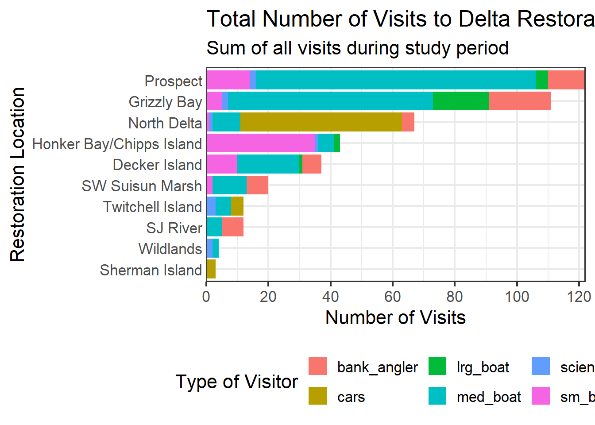
# adding desc() to variable we're sorting by
daily_visits_totals <- daily_visits_loc %>%
group_by(restore_loc) %>%
mutate(n = sum(daily_visits)) %>%
ungroup() %>%
mutate(restore_loc = fct_reorder(restore_loc, desc(n)))
ggplot(data = daily_visits_totals,
aes(x = daily_visits, y = restore_loc,
fill = visitor_type)) +
geom_col() +
labs(x = "Number of Visits",
y = "Restoration Location",
fill = "Type of Visitor",
title = "Total Number of Visits to Delta Restoration Areas by visitor type",
subtitle = "Sum of all visits during study period") +
scale_x_continuous(breaks = seq(0,120, 20), expand = c(0,0)) +
my_theme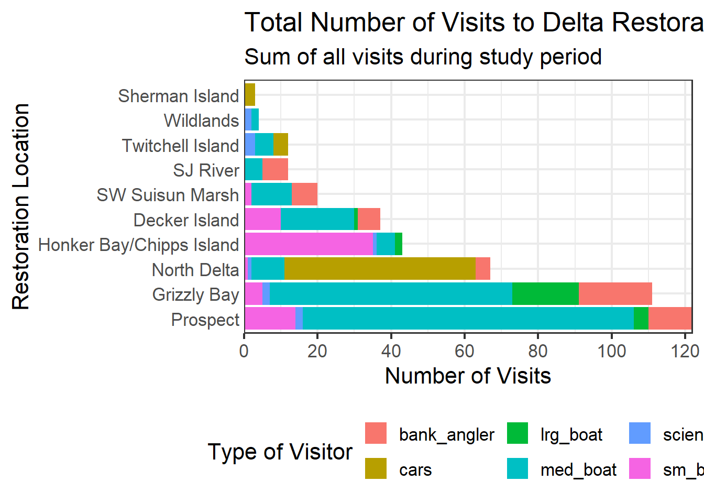
Colors
# changing colors!
my_favorite_graph <- ggplot(data = daily_visits_totals,
aes(x = daily_visits, y = restore_loc,
fill = visitor_type)) +
geom_col() +
scale_fill_viridis_d() +
labs(x = "Number of Visits",
y = "Restoration Location",
fill = "Type of Visitor",
title = "Total Number of Visits to Delta Restoration Areas by visitor type",
subtitle = "Sum of all visits during study period") +
scale_x_continuous(breaks = seq(0,120, 20), expand = c(0,0)) +
my_theme
my_favorite_graph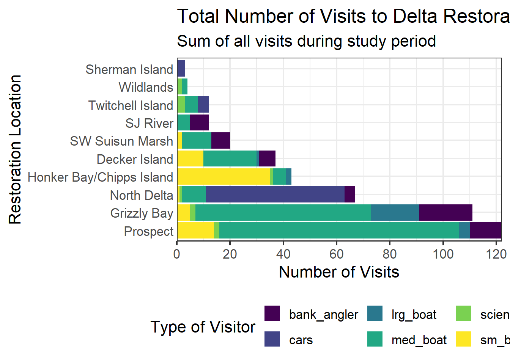
Multiple Plots
# mapping to a variable using the syntax
facet_plot <- ggplot(data = daily_visits_totals,
aes(x = visitor_type, y = daily_visits,
fill = visitor_type)) +
geom_col() +
facet_wrap(~restore_loc,
scales = "free_y",
ncol = 5,
nrow = 2) +
scale_fill_viridis_d() +
labs(x = "Type of visitor",
y = "Number of Visits",
title = "Total Number of Visits to Delta Restoration Areas",
subtitle = "Sum of all visits during study period") +
theme_bw() +
theme(legend.position = "bottom",
axis.ticks.x = element_blank(),
axis.text.x = element_blank())
facet_plot
Interactive Visualization
Tables with DT
# creating locations dataset
locations <- visits_long %>%
distinct(restore_loc, .keep_all = TRUE) %>%
select(restore_loc, latitude, longitude)
head(locations)# A tibble: 6 × 3
restore_loc latitude longitude
<chr> <dbl> <dbl>
1 Decker Island 38.1 -122.
2 SW Suisun Marsh 38.2 -122.
3 Grizzly Bay 38.1 -122.
4 Prospect 38.2 -122.
5 SJ River 38.1 -122.
6 Wildlands 38.3 -122.# convert our dataset into an interactive table using datatable()
datatable(locations)Maps with Leaflet
# using leaflet() and addTiles() to make an interactive map with base tiles
leaflet(locations) %>%
addTiles() %>%
addMarkers(
lng = ~ longitude,
lat = ~ latitude,
popup = ~ restore_loc
)# changing base map style
leaflet(locations) %>%
addProviderTiles(providers$Esri.WorldTopoMap) %>%
addCircleMarkers(
lng = ~ longitude,
lat = ~ latitude,
popup = ~ restore_loc,
radius = 5,
# set fill properties
fillColor = "salmon",
fillOpacity = 1,
# set stroke properties
stroke = TRUE,
weight = 0.5,
color = "white",
opacity = 1)# layering a second reference map
my_favorite_map <- leaflet(locations) %>%
addProviderTiles(providers$Esri.WorldImagery) %>%
addProviderTiles(providers$CartoDB.PositronOnlyLabels) %>%
addCircleMarkers(
lng = ~ longitude,
lat = ~ latitude,
popup = ~ restore_loc,
radius = 5,
# set fill properties
fillColor = "salmon",
fillOpacity = 1,
# set stroke properties
stroke = TRUE,
weight = 0.5,
color = "white",
opacity = 1)
my_favorite_mapAnalysis
Our workflow began with the loading in of our raw dataset to evaluate the initial tidiness, structure, and potential errors. At first, we applied janitor::clean_names() to standardize our formatting and simplify any downstream wrangling. Since the raw dataset contained several different categories in separate columns, it was crucial that I standardized and reshaped the format into a long format using pivot_longer(). Now tidy, I applied this processed dataset to several different visualization approaches, generating various levels of bar graphs. Finally, with my processed dataset and refined plot, I generated an interactive map using leaflet with place markers on its base map and layered with additional visualizations to create a final spatial rendering of the visitation patterns I observed in my previous plots. Of all the versions of data plots and site maps created during the lesson, my personal favorites were:
# favorite final version of plot:
my_favorite_graph
#favorite final version of map:
my_favorite_mapConclusion
Overall, this assignment put my recently developed data cleaning skills to the test while reminding me how structured, reproducible data workflows can transform raw data into beautiful visualizations and meaningful ecological insights. By cleaning, reshaping, and summarizing the assigned dataset, I produced visualizations that shows clear differences in visitation across restoration sites and visitor type. Its really cool to see that, with all these outputs put together, we can illustrate how data visualization can support data interpretation, communication, and decision-making in socio-ecological research. Above all, this lesson also pushes the narrative forward that tidy data is foundational for interdisciplinary research.